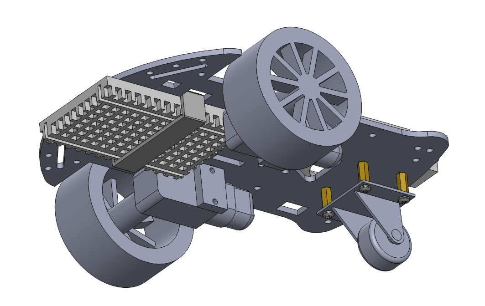
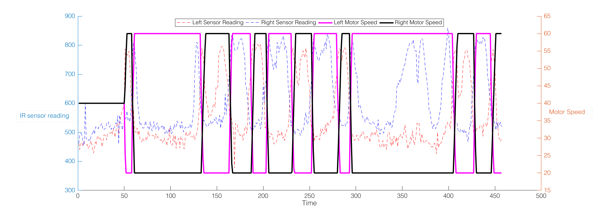

PID Line Follower
As part of my Principles of Engineering class, in a team of two, we built a PID controlled robot that can follow a certain path on the floor, drawn with black tape. Along with designing the motor and sensor mounts for the robot, I designed parts electrical components, and helped improve the control loop. At the end of the lab, we managed to complete the track in 39 seconds.

Since we had to get power from a wall outlet (one of the requirements), my partner and I made a 12V barrel jack to Molex connector adapter, along with another Molex connector that powered our Arduino and the motor shield. Since both all of the power was through the wall outlet, I decided to put the Arduino at the rear of the motor, so that the power cables would be out of the way. I designed an Arduino mount in Solidworks that would allow for the Arduino and the motor shield to sit in it without shaking or slipping. I had to account for some tolerance, due to imperfection of the printers
Knowing that PLA is a flexible material, I decided to experiment with it and design a bracket that can hug over the breadboard and clip on the chassis. I also wanted to make the most of the large gaps in the chassis, so that I could route wires through them. Therefore I came up with the design above, which hugs the breadboard that has the IR sensor on it and clamps it on to the chassis, leaving enough room in the gaps that it is attached to, so that I could route the wires through.
A large part of the project was to write a PID controller for the robot. We wrote a PID controller algorithm that had encoded the wheel speeds for the motors depending on the IR sensor reading closer to corresponsding wheel. Due to time constraints we didn't have much time to tune our PID controller, so it ended up being a PD controller that acted a lot like a bang-bang controller. This can be seen in the plot above, where the wheel speeds look a lot like square waves, even though the sensor readings are not. This was because of our proportional controls being too powerful that the wheel speeds maxed out really quickly and made it look like a bang-bang controller.
- Design: HTML5 UP